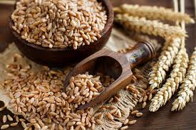

🌾 Crop Information
Rice

Requires high rainfall and warm climate.
Wheat

Grows best in cool climate with moderate rainfall.
Maize

Needs well-drained soil and warm weather.
Cotton

Requires black soil and high temperature.
🌦️ Weather Conditions
Weather plays a major role in crop growth. Temperature, humidity, and rainfall must be balanced.
📊 Crop Yield Factors
- Soil fertility
- Water availability
- Climate conditions
- Farming techniques
🚜 Modern Farming
Use of AI and technology helps farmers improve crop production and reduce loss.